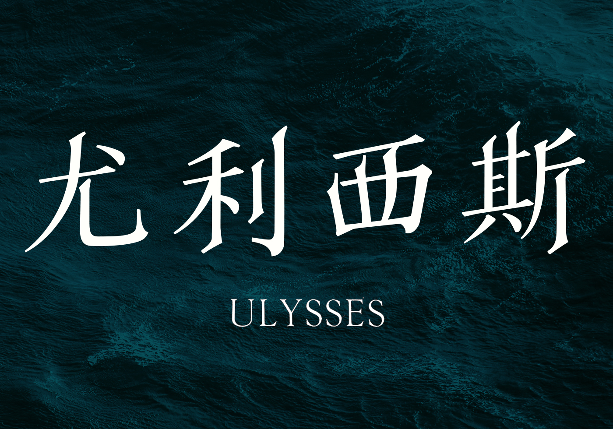
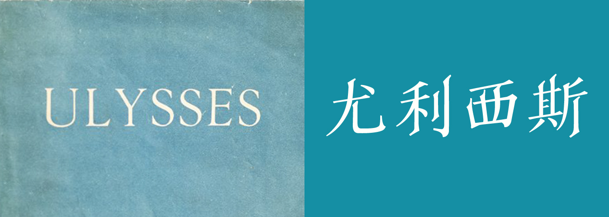
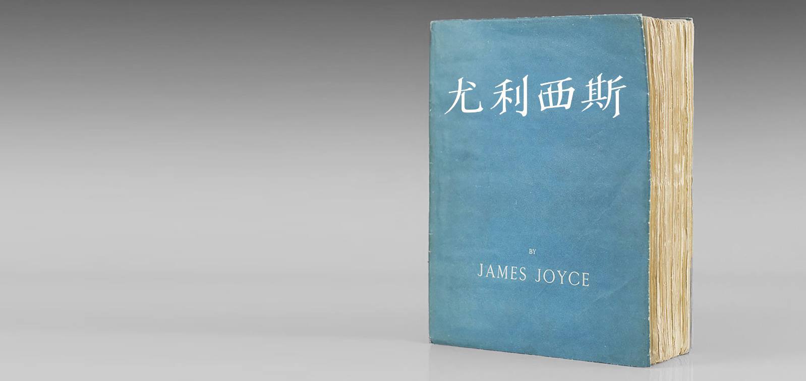
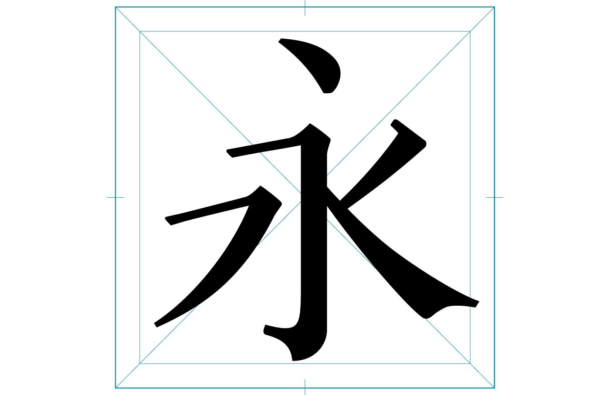
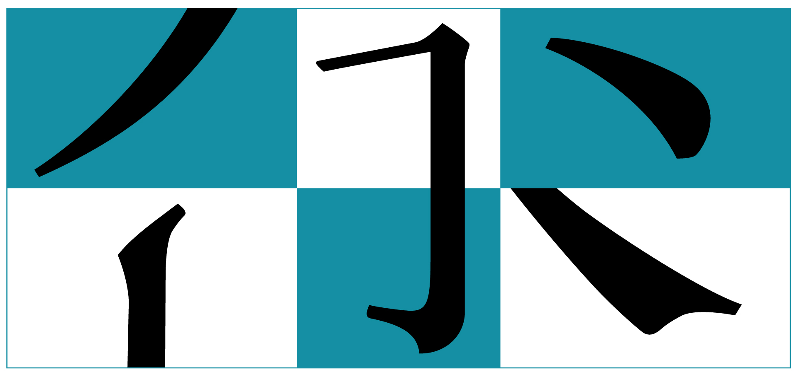
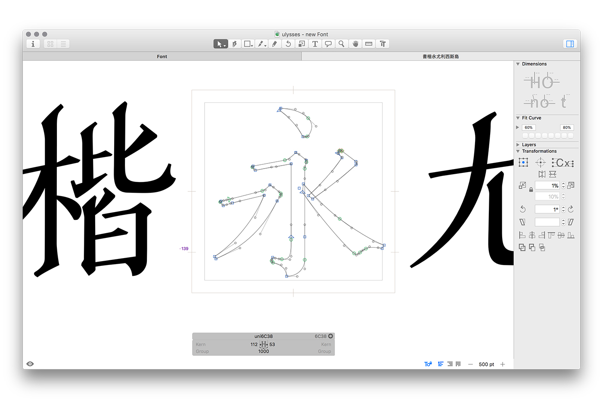
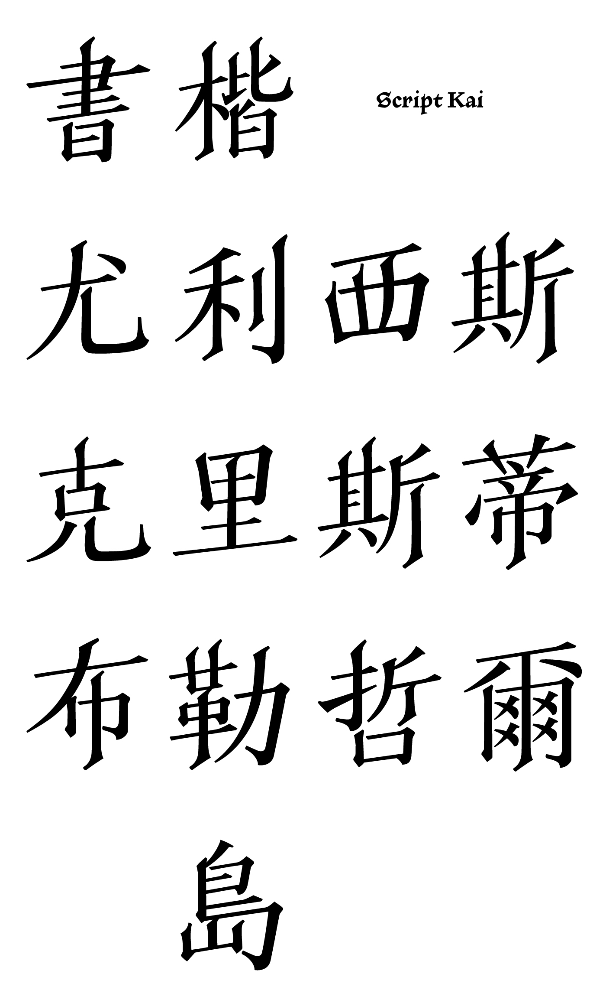
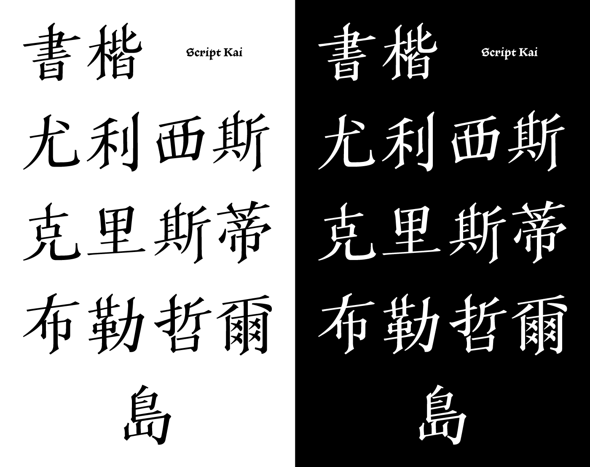
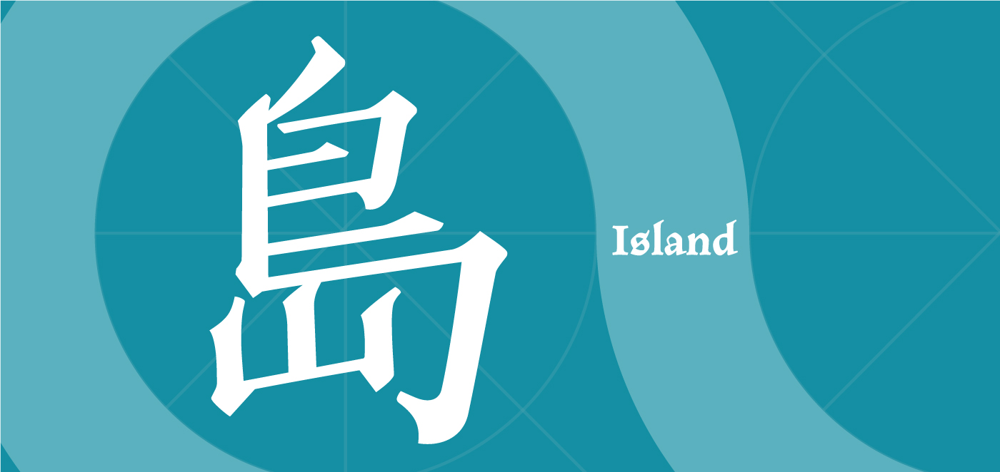

字體
書楷體
Script Kai
這是在進行「尤利西斯」背景研究時啟發的衍伸創作，我思考在外文書譯為中文時，當文字創作者對於其作品的視覺呈現形式有所設計時，如何才能最大程度翻譯作家的創作？

Designer translates abstract ideas into concrete forms.
Paul Rand
Paul Rand在描述符號設計時曾說過這句話，可以譯作設計師將抽象的概念
翻譯
為實存的形式。
這很接近這個字體的創作原因—想翻譯原作封面，在文本傳遞到他國時，
不只是語言的轉換同時也包含視覺形式的。

如何才能最大程度翻譯作家的創作？
這是從「Redesign class books」所衍伸的字體設計，在進行「尤利西斯」背景研究時，看到1922年初版印刷的封面(fig.1)是漂亮的愛琴海藍—James Joyce親自指定的顏色，由法國巴黎的莎士比亞書店出版，此書店營業至今。
這個發現使我思考在外文書譯為中文時，書籍的封面通常會重新依不同的國家文化重新設計。但當文字創作者對於其作品的視覺呈現形式有所設計時，如何才能最大程度翻譯作家的創作？
根據資料Joyce在世時所出版的其他語言譯本，也沒有保留初版的設計。


書楷體想保留原書的氛圍
技法上以楷書的骨架加上平頭筆書寫時的筆畫，而不是與ULYSSES的金屬字體可能更接近的明體，因為楷體上斜的橫畫比明體水平垂直的筆畫更有人文氣息，也更接近Joyce的書寫風格。





James Joyce的「尤利西斯」與荷馬的「奧德賽」平行對應，奧德賽是特洛伊戰爭的英雄，戰爭結束後，他航行小島遍佈的愛琴海，歷經十年考驗才返回希臘本土的家—這是關於「島」字的衍伸故事。這個字體也參與了justfont舉辦的「島」字型提案概念展。
如果你有任何建議，或是想將這個字體應用在你的海報、封面或LOGO上，歡迎寄信給我:)
verachang.designs@gmail.com